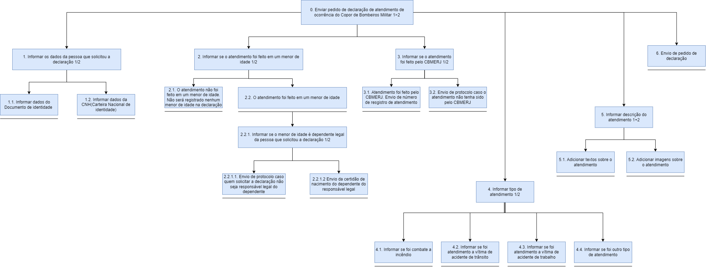

Análise de tarefas
Introdução
A análise de tarefas é muito importante para compreender como os usuários realizam suas atividades, os objetivos que buscam alcançar e os desafios enfrentados no processo. Segundo Diaper (2003), ela engloba métodos para coletar, classificar e interpretar dados sobre o desempenho de sistemas que incluem pelo menos uma pessoa como componente. Essa abordagem é essencial tanto para a análise da situação atual quanto para o (re)design de sistemas computacionais, além de ser fundamental na avaliação de intervenções que introduzem novos sistemas.
Metodologia
Entre os métodos mais comuns de análise de tarefas, destacam-se a Análise Hierárquica de Tarefas (HTA), que descreve as tarefas em uma hierarquia; o GOMS, que desmembra as tarefas em metas, operadores, métodos e regras de seleção; e o ConcurTaskTrees (CTT), que permite representar visualmente as tarefas e as condições de concorrência entre elas.
Para cada funcionalidade analisada, iremos aplicar dois métodos, Análise Hierárquica de Tarefas e Árvores de Tarefas Concorrentes. Abaixo, descrevemos brevemente Todos os métodos:
Análise Hierárquica de Tarefas (HTA)
A Análise Hierárquica de Tarefas (HTA) é uma abordagem utilizada para quebrar uma tarefa complexa em sub-tarefas menores, facilitando a compreensão do processo geral.
De acordo com Stanton et al. no livro "Human Factors Methods: A Practical Guide for Engineering and Design", a HTA "é um método para descrever uma tarefa complexa ao dividi-la em sub-tarefas menores e mais gerenciáveis, o que ajuda na visualização organizada para compreender e melhorar a experiência do usuário.
Etapas básicas da HTA:
Definição do Objetivo: Comece definindo o objetivo principal da tarefa. A clareza do propósito é fundamental. Divisão em Sub-tarefas: Em seguida, divida a tarefa em componentes menores. Isso ajuda a compreender as partes individuais da tarefa. Estruturação Hierárquica: Organize as sub-tarefas em uma estrutura que mostre sua relação hierárquica. Sequência e Relações: Determine a sequência ideal e as dependências entre as sub-tarefas. Recursos e Restrições: Identifique os recursos necessários para cada sub-tarefa, bem como as restrições que possam afetar seu andamento. A HTA é amplamente utilizada para avaliar a usabilidade de interfaces e identificar áreas de melhoria. Kirwan & Ainsworth, em seu livro "A Guide to Task Analysis", destacam que a HTA "permite uma análise estruturada do trabalho e fornece uma visão geral dos componentes críticos de uma tarefa complexa, ajudando a otimizar processos".
Árvores de Tarefas Concorrentes (ConcurTaskTrees – CTT)
As Árvores de Tarefas Concorrentes, ou Árvores de Tarefas Paralelas, são uma estrutura visual usada para representar a relação entre tarefas que podem ser realizadas simultaneamente ou em uma ordem flexível. Elas são especialmente úteis em projetos de interação humano-computador, onde a multitarefa é comum. Em vez de uma sequência linear de atividades, as Árvores de Tarefas Concorrentes demonstram como diferentes tarefas podem ocorrer ao mesmo tempo.
Componentes das Árvores de Tarefas Concorrentes:
Nó Raiz: O ponto de partida da árvore, representando o objetivo ou a tarefa principal. Ramos Paralelos: Diferentemente das árvores de tarefas tradicionais, as Árvores de Tarefas Concorrentes permitem ramos que representam tarefas que podem ser executadas simultaneamente. Nós de Sincronização: Estes nós indicam onde diferentes ramos precisam convergir para continuar o processo, sinalizando pontos de junção ou sincronização entre tarefas. Dependências: As Árvores de Tarefas Concorrentes destacam as relações de dependência entre as tarefas, indicando quais atividades precisam ser concluídas antes que outras possam começar. As Árvores de Tarefas Concorrentes são amplamente usadas para mapear processos de trabalho complexos ou interfaces de usuário que suportam multitarefa. Elas também ajudam a identificar oportunidades para otimizar fluxos de trabalho e aumentar a eficiência.
Árvores de Tarefas Concorrentes permitem uma compreensão mais clara das tarefas que podem ser realizadas em paralelo, facilitando a análise de processos e a otimização de sistemas para maior eficiência e flexibilidade".
GOMS (Goals, Operators, Methods, and Selection Rules)
O modelo GOMS (Goals, Operators, Methods, and Selection Rules) é uma abordagem analítica usada para entender as interações humanas com sistemas computacionais, especialmente no contexto de interfaces de usuário.
De acordo com Card, Moran e Newell, que introduziram o modelo no livro "The Psychology of Human-Computer Interaction", o GOMS "é uma estrutura que descreve como os usuários interagem com sistemas computacionais, identificando objetivos, operações, métodos e regras de seleção para alcançar esses objetivos".
Componentes do Modelo GOMS (Acrônimo formado pelas etapas):
Objetivos (Goals): Os objetivos representam o resultado final que o usuário busca atingir. Operadores (Operators): Os operadores são as ações que o usuário executa para alcançar um objetivo, como pressionar teclas. Métodos (Methods): Os métodos são sequências de operadores usadas para atingir um objetivo específico. Regras de Seleção (Selection Rules): As regras de seleção determinam qual método será usado quando há mais de um disponível. Essas regras ajudam a definir o comportamento do usuário em diferentes contextos.
Análise de Tarefas
1. Solicitação de Ficha de Atendimento - Bruna Lima
A sugestão de incluir a funcionalidade de "Solicitação de Ficha de Atendimento" no site do Corpo de Bombeiros do Rio de Janeiro surgiu ao observar a utilidade desse serviço já oferecido no site do Corpo de Bombeiros do Distrito Federal. Essa funcionalidade proporcionará aos cidadãos e empresas a conveniência de solicitar e agendar online atendimentos para diversos serviços prestados pelo Corpo de Bombeiros, tais como: vistorias, credenciamento inicial ou renovação para empresas de formação de brigadistas, relatório de ocorrência, entre outros.
Análise Hierárquica de Tarefas: A figura 1 e a tabela 1 apresentam a análise hierárquica dessa tarefa em sua forma textual e de diagrama, respectivamente.
| Objetivos/Operações | Problemas e recomendações |
|---|---|
| 0. Solicitar Ficha de Atendimento 1>2 | input: Formulário para ficha de atendimento com dados do requerente e da opção selecionada. ação: Necessário se autenticar pelo GOV.BR. feedback: A nova ficha ficará disponível para os responsáveis do Corpo de Bombeiros analisarem a solicitação. plano: Criar ficha do atendimento solicitado. |
| 1. Selecionar tipo do requerimento 1/2 | input: Seleção do requerimento desejado entre os disponíveis. |
| 2. Preencher Solicitação da Ficha de Atendimento 1>2 | plano: Informar dados do requerente e do tipo de requerimento selecionado; upload da documentação relacionada; selecionar data e horário para atendimento; análise dos termos de ciência e compromisso. |
| 2.1 Informar dados do requerente e do tipo de requerimento selecionado 1+2 | |
| 2.2 Upload da documentação relacionada 1+2 | |
| 2.3 Selecionar a data e horário para o atendimento 1+2 | |
| 2.4 Análise dos termos de ciência e compromisso 1+2 | ação: Se os termos não forem aceitos pelo requerente, a submissão da ficha não será permitida. |
| 3. Confirmar a criação da ficha de atendimento | ação: A ficha deve ser cadastrada automaticamente, e o status da solicitação deve estar disponível para acompanhamento. |
Tabela 1: HTA em tabela da "Solicitação de Requerimento Padrão" (Fonte: Bruna Lima, 2024).
Figura 1 - Diagrama HTA, para o objetivo de "Solicitação de Ficha de Atendimento" (Fonte: Bruna Lima, 2024).
Árvores de Tarefas Concorrentes: A figura 2 contém a análise representada em diagrama da tarefa de "Solicitação de Ficha de Atendimento" com uso da técnica de Árvores de Tarefas Concorrentes.
Figura 2 - Diagrama da Árvores de Tarefas Concorrentes da "Solicitação de Ficha de Atendimento" (Fonte: Bruna Lima, 2024).
2. Agendamento de atendimento presencial - Daniela Alarcão
Agendamento de atendimento presencial é uma funcionalidade importante que permite ao usuário resolver suas pendencias presencialmente. Para a análise dessa funcionalidade, foram aplicadas as técnicas de Análise Hierárquica de Tarefas e Árvores de Tarefas Concorrentes.
Análise Hierárquica de Tarefas: A tabela 2 apresenta a análise hierárquica dessa tarefa em sua forma textual.
| Objetivos/Operações | Problemas e recomendações |
|---|---|
| 0. Acessar a página de agendamento de atendimento presencial. | input: Acessar o site do corpo de bombeiros do estado do Rio de Janeiro. feedback: Apresentar a página de agendamento de atendimento presencial. |
| 1. Selecionar o tipo de atendimento | plano: Exibir uma lista de tipos de atendimentos. feedback: Apresentar detalhes sobre cada tipo de atendimento e o que é necessário para realizá-los. |
| 2. Preencher informações pessoais e de agendamento. | plano: Solicitar nome, CPF, endereço, telefone, e-mail e atendimento desejado ao solicitante. recomendação: Implementar preenchimento automático, permitir edição fácil de informações e marcar campos obrigatórios. |
| 3. Escolher data e horário disponíveis para o atendimento. | ação: Disponibilizar uma relação das datas e horários disponíveis. recomendação: Garantir que as datas e horários sejam atualizados em tempo real para refletir a disponibilidade atual. feedback: Mostrar data e horário escolhidos. |
| 4. Confirmar e finalizar agendamento. | ação: Disponibilizar uma relação de todas as informações inseridas para revisão final. feedback: Enviar confirmação do agendamento por e-mail/SMS com as informações mais relevantes. |
| 5. Reagendar ou cancelar agendamento. | input: Permitir ao usuário acessar seus agendamentos. ação: Possibilitar a seleção de nova data e horário ou cancelar agendamento. feedback: Enviar confirmação do reagendamento ou cancelamento por e-mail/SMS. |
Tabela 2 - Análise hierárquica da funcionalidade "Agendamento de Atendimento Presencial" (Fonte: Daniela Alarcão, 2024).
Árvores de Tarefas Concorrentes: A figura 3 apresenta a análise dessa tarefa, representada em diagrama, com o uso da técnica de Árvores de Tarefas Concorrentes.
Figura 3 - Diagrama da Árvores de Tarefas Concorrentes do "Agendamento de atendimento presencial" (Fonte: Daniela Alarcão, 2024).
3. Checar e Gerar Certificado - Genilson Silva
O acesso a funcionalidade de Checar e Gerar Certificado refere-se a um meio de ver o estágio do andamento da solicitação de um certificado de forma simples e rápida, podendo checar a prontidão e posteriormente descarregar o arquivo. Também é possível acessar certificados já solicitados anteriormente e descarrega-los quando desejado.
Para essa análise, foram aplicadas as técnicas de Análise Hierárquica de Tarefas e Árvores de Tarefas Concorrentes.
A figura 4 e 5 apresentadas a seguir nesta ordem, mostra a Análise Hierárquica de Tarefase e a Árvores de Tarefas Concorrentes.
- Análise Hierárquica de Tarefas
Figura 4 - Análise Hierárquica de Tarefas (Fonte: Genilson Junior, 2024)
- Árvores de Tarefas Concorrentes
Figura 5 - Árvores de Tarefas Concorrentes (Fonte: Genilson Junior, 2024)
4. Obter declaração de atendimento de ocorrência do Corpo de Bombeiros - Mariana Letícia
Em relação a declaração de atendimento de ocorrência do Corpo de Bombeiros, essa é uma funcionalidade do site com o objetivo de gerar uma declaração constatando que houve um atendimento de alguma ocorrência. Segue abaixo a análise dessa tarefa.
Análise Hierárquica de Tarefas: A figura 6 e tabela 3 apresentam os dados analisados a partir dessa análise:
| Objetivos/Operações | Problemas e recomendações |
|---|---|
| 0. Enviar pedido de declaração de atendimento de ocorrência do Copo de Bombeiros Militar 1>2 | input: formulário de dados do responsavel legal, dependente, registro de ocorrência e protocolo de ocorrência feedback: o usuário receberá a declaração de atendimento de ocorrência por email plano: informar dados para obter a declaração de ocorrência, e por fim enviá-los recomendação: o usuário pode preencher esses dados pelo computador. |
| 1. Informar os dados da pessoa que solicitou a declaração 1/2 | plano: inserir dados ou da Identidade ou da CNH além de dados para o contato |
| 1.1. Informar dados do Documento de identidade | |
| 1.2. Informar dados da CNH(Carteira Nacional de identidade) | |
| 2. Informar se o atendimento foi feito em um menor de idade 1/2 | plano: Informar se o atendimento foi efetuado em um menor de idade e seus documentos em caso positivo |
| 2.1. O atendimento não foi feito em um menor de idade. Não será registrado nenhum menor de idade na declaração | |
| 2.2. O atendimento foi feito em um menor de idade | |
| 2.2.1. Informar se o menor de idade é dependente legal da pessoa que solicitou a declaração 1/2 | plano: enviar ou um protocolo ou uma image da certidão de nascimento |
| 2.2.1.1. Envio de protocolo caso quem solicitar a declaração não seja responsável legal do dependente | |
| 2.2.1.2 Envio da certidão de nacimento do dependente do responsável legal | |
| 3. Informar se o atendimento foi feito pelo CBMERJ 1/2 | plano: informar se o atendimento foi ou não feito pelo CBMERJ. Se sim, informar número do registro do atendimento, se não, informar um protocolo qual autoriza uma pessoa a se responsabilizar pelo menor de idade |
| 3.1. Atendimento foi feito pelo CBMERJ. Envio de número de resgistro de atendimento | |
| 3.2. Envio de protocolo caso o atendimento não tenha sido pelo CBMERJ | |
| 4. Informar tipo de atendimento 1/2 | plano: escolher o tipo de atendimento que foi realizado na ocorrência |
| 4.1. Informar se foi combate a incêndio | |
| 4.2. Informar se foi atendimento a vítima de acidente de trânsito | |
| 4.3. Informar se foi atendimento a vítima de acidente de trabalho | |
| 4.4. Informar se foi outro tipo de atendimento | |
| 5. Informar descrição do atendimento 1+2 | plano: detalhar o atendimento realizado |
| 5.1. Adicionar textos sobre o atendimento | |
| 5.2. Adicionar imagens sobre o atendimento | |
| 6. Envio de pedido de declaração | plano: Enviar as informações. ação: a declaração pode ser enviada pelo email/telefone do usuário até 10 dias recomendação: o sistema precisa ser eficiente. |
Tabela 3: Análise hierárquica da tarefa "Obter declaração de atendimento de ocorrência do Corpo de Bombeiros" (Fonte: Mariana Letícia, 2024).
Logo baixo, há a figura 6 a qual demonstra a tabela 3 acima de modo visual:

Figura 6 - Análise hierárquica da tarefa da "Obter declaração de atendimento de ocorrência do Corpo de Bombeiroso" (Fonte: Mariana Letícia, 2024).
Árvores de Tarefas Concorrentes: a análise de tarefa feita por esse modelo está representada abaixo na figura 7, contendo a relação que as tarefas tem umas com as outras e a nomeação de cada tarefa.
Figura 7 - Diagrama da Árvores de Tarefas Concorrentes da "Obter declaração de atendimento de ocorrência do Corpo de Bombeiros" (Fonte: Mariana Letícia, 2024).
5. Curso CBMERJ - Acidentes Domicilares - Pedro Henrique
O Cursos CBMERJ - Acidentes domiciliares é uma funcionalidade que introduz um curso de Acidentes Domiciliares para o site do CBMRJ. Desta maneira, foram utilizadas duas das seguintes técnicas de analise de tarefas (Análise Hierárquica de Tarefas e Árvores de Tarefas Concorrentes), conforme pode ser visto abaixo:
Análise Hierárquica de Tarefas: A tabela 4 exibe uma representação de forma textual da análise hierárquica, enquanto a figura 8 apresentação um diagrama:
| Objetivos/Operações | Problemas e recomendações |
|---|---|
| 0. Realizar o curso do CBMERJ | input: Acessar ao site CBMERJ. feedback: Carregar a página inicial do Corpo de Bombeiros. plano: Realizar o curso do Corpo de Bombeiros |
| 1. Acessar aos Cursos 1>2 | |
| 1.2 Acesso à página de cursos | Plano: Acessar a página de cursos do CBMERJ |
| Ação: Selecionar a aba “Cursos EAD” no menu suspenso do site | |
| 2. Realização do Login 1/2 | Plano: Acessar a área de login ou realizar um novo cadastro. |
| 2.1 Inserir credenciais | Ação: Digitar o nome de usuário e senha fornecidos |
| 2.2 Fazer cadastro | Ação: Preencher um formulário de cadastro com informações pessoais. |
| 3. Acesso às páginas e módulos do curso 1/2 | |
| 3.1 Escolher o curso designado | Plano: Encontrar e selecionar o curso desejado na lista de cursos disponíveis. Ação: Navegar pelas opções de cursos ou usar a barra de pesquisa para encontrar o curso. |
| 4. Interagir 1+2 | |
| 4.1 Suporte Técnico e Tutoria | Plano: Obter assistência técnica ou orientação adicional, se necessário. |
| Ação: Enviar um formulário para o suporte técnico ou usar o chat ao vivo para entrar em contato com um tutor. | |
| 4.2 Participação de Fóruns e Discussões | Plano: Envolvimento em discussões online com instrutores e outros participantes. |
| 5. Aprender 1+2 | |
| 5.1 Acesso às aulas e conteúdos | |
| 5.2 Download do Material de Apoio | Plano: Acesso a documentos, guias ou vídeos adicionais relacionados ao curso. Ação: Clicar em links de download ou acessar seções específicas do site para encontrar recursos complementares. |
| 6. Avaliar o desempenho e rendimento 1>2 | |
| 6.1 Realização de Teste e Avaliações | Ação: Responder a perguntas de múltipla escolha ou realizar atividades práticas para avaliar o aprendizado. |
| 7. Concluir Curso 1>2 | |
| 7.1 Realização do Teste Final | Plano: Conclusão de uma avaliação final para demonstrar o conhecimento adquirido. Ação: Responder a um teste final ou concluir uma atividade prática para avaliar as habilidades adquiridas. |
| 7.2 Emissão de Certificado e Conclusão | Ação: Clicar em um botão para solicitar o certificado. |
Tabela 4 - Análise hierárquica do "Cursos CBMERJ - Acidentes domiciliares" (Fonte: Pedro Henrique, 2024).
Figura 8 - Diagrama de Análise hierárquica do "Cursos Acidentes domiciliares" (Fonte: Pedro Henrique, 2024).
Árvores de Tarefas Concorrentes: A figura 9 apresenta uma representação do diagrama com a utilização da técnica de Árvores de Tarefas Concorrentes a partir da analise da tarefa "Curso CBMERJ - Acidentes Domiciliares":
Figura 9 - Diagrama da Árvore de Tarefa Concorrente do "Cursos - Acidente Domiciliares" (Fonte: Pedro Henrique, 2024).
6. Curso dos Bombeiros. - Lucas Avelar
A proposta é adicionar ao site do corpo de bombeiros, uma funcionalidade de cursos para o cidadão, afim de democratizar o acesso a conhecimento e ser algo que possam usar em suas vidas. Esse é um dos motivos da funcionalidade dar um certificado ao final da conclusão dos cursos, valido em todo o território nacional.
Para essa análise, foram aplicadas as técnicas de Análise Hierárquica de Tarefas e Árvores de Tarefas Concorrentes.
| Objetivos/Operações | Problemas e recomendações |
|---|---|
| 1. Fazer o curso. | input: Acessar o CB cursos. feedback: Finalizar e receber o certificado. plano: Democratizar conhecimento. recomendação: Implementar funcionalidade. |
Tabela 5 - Análise hierárquica do sistema CB cursos (Fonte: Lucas Avelar, 2024).
Árvores de Tarefas Concorrentes: A figura 10 apresenta a análise dessa tarefa, representada em diagrama, com o uso de Árvores de Tarefas Concorrentes.

Figura 10 - Diagrama da Árvores Curso dos bombeiros (Fonte: Lucas Avelar, 2024).
Bibliografia
- Barbosa, S. D. J.; Silva, B. S. da; Silveira, M. S.; Gasparini, I.; Darin, T.; Barbosa, G. D. J. Interação Humano-Computador e Experiência do usuário. (2021)
Histórico de Versões
| Versão | Data | Descrição | Autor(es) | Revisor(es) |
|---|---|---|---|---|
1.0 |
13/04/2024 | Criação da página | Mariana Letícia | Bruna Lima |
1.1 |
20/04/2024 | Adição da introdução, metodologia e da tarefa 1 | Bruna Lima | Genilson Silva |
1.2 |
21/04/2024 | Adição da tarefa 2 | Genilson Silva | Mariana Letícia |
1.3 |
23/04/2024 | Adição da tarefa 4 | Mariana Letícia | Genilson Silva |
1.4 |
06/05/2024 | Adição da tarefa "Locais certificados" | Daniela Alarcão | Bruna Lima |
1.5 |
06/05/2024 | Adição da tarefa 5 "Catálogo Telefônico" | Pedro Henrique | Genilson Silva |
1.6 |
06/05/2024 | Adição da tarefa 6 "sistema UPO" | Lucas Avelar | Mariana Letícia |
2.0 |
06/05/2024 | Adição e Correção da Analise Cursos - Acidentes Domiciliares | Pedro Henrique | Mariana Letícia |